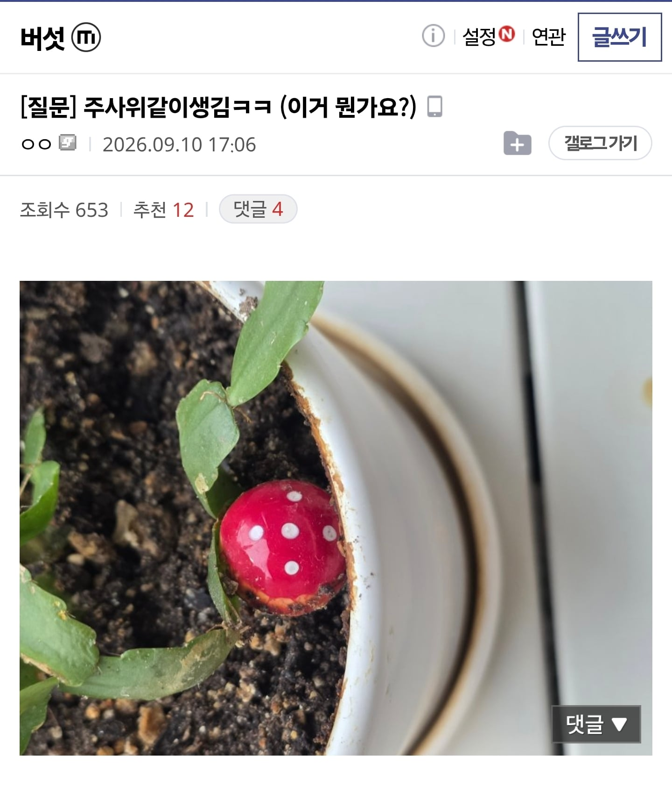
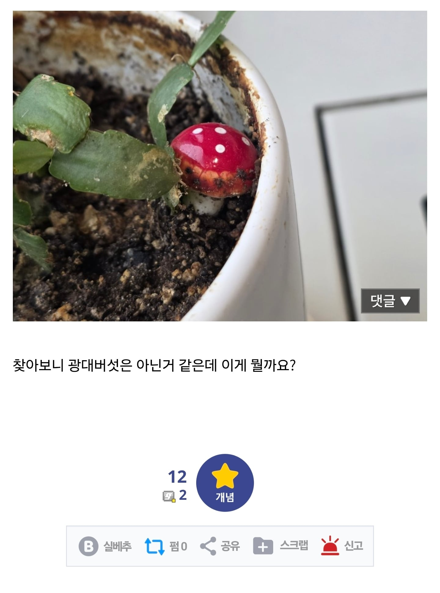
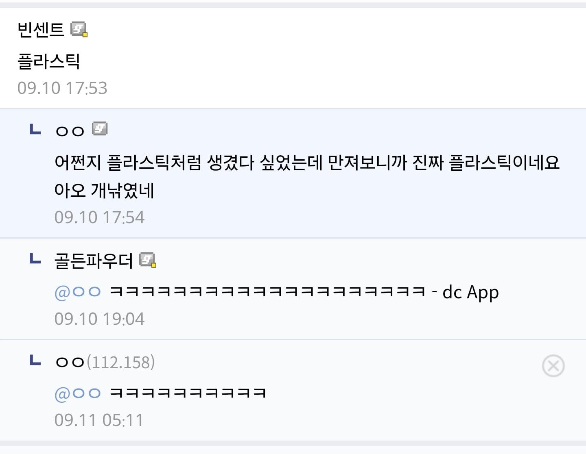

너무 이쁘게 생겼잖아
와! 희귀한 자연산 플라스틱!
드시진 마세요~
한번에 알아보는 것도 대단하네
화분에 장식으로 자주 쓰이는 제품 ㅋㅋ

유광 버섯은 없는 것인가
왁스캡이라고 점액질때문에 유광으로 빛나는 버섯 있어
오호
근데 본문 사진이랑은 많이 다르게 생기긴 했네 ㅋㅋ
고분자 버섯 ㄷㄷ
플라스틱을 키운거야?
순간 독버섯같은데 저분 괜찮나? 하고 걱정했는데 씹 ㅋㅋ
귀엽다
플라스틱이 저렇게 생산되는거구나
오
슈퍼마리오에 나오는 버섯같이 생겼네 라고 생각했더니
균하하
헤네시스마을에 있는거
독버섯은 키우는 것만으로도 위험해?
포자 날리는것 때문인가.
이게 무슨 ㅋㅋㅋ